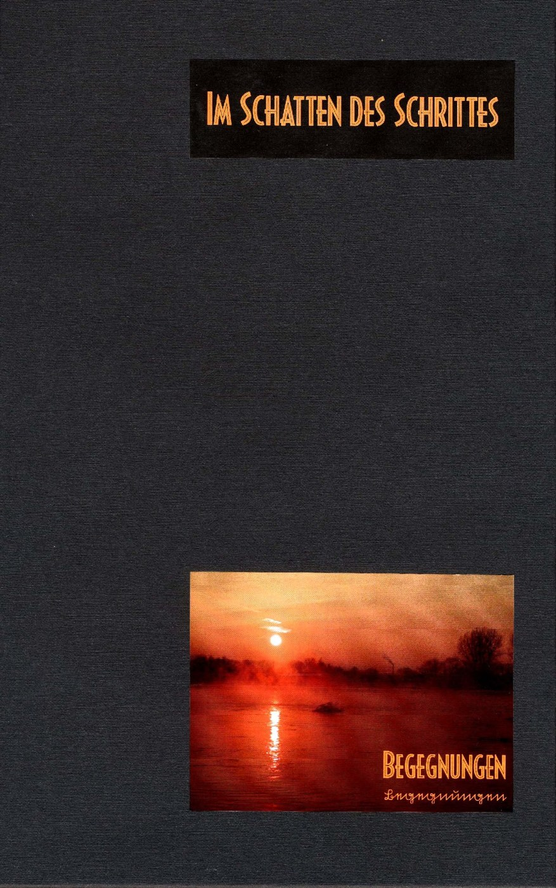

Neben der Schriftenreihe „Rund um den Finckenfang“ veröffentlicht der Verlag auch Bücher zu anderen Themen.
Die letzten Tage von Edo in japanischen Holzschnitten.
Von Gerhard F. Philipp. Herausgegeben von Julius F. G. Tüting.
29,00 €
Bestellanfrage per E-MailForellenrezepte & Die Geschichte der Forellenzucht am Huxel im Felderbachtal.
Herausgegeben von Gisela Niggemann-Simon.
6,00 €
Bestellanfrage per E-Mail
Kleine Kunstwerke in Wort und Bild von Lars Tennhardt.
Zurzeit nicht lieferbar